Slack Exercise
UX DESIGN

Slack is a team collaboration application that is mainly used in office settings. However, with the increased popularity of the product, a growing number of remote and non-traditional professional teams are making use of the tool. Specifically at UCLA, I have been a part of 3 separate student organizations and every single one has utilized Slack.
Currently, I am on the LA Hacks organizing team, an organization consisting of 35 members who meet once or twice a week but participate in collaborative work nearly every day. The organization consists of a development team, design team, marketing team, hacker experience team, sponsorship team, and more, much like a traditional company. As a result we utilize Slack on a daily basis and have found it incredibly helpful. Yet, members have also offered their fair share of complaints.
To learn more about this, I conducted interviews with 21 members on the LA Hacks team about their use with Slack. Because we are not in a traditional office setting, I found that 67% of the LA Hacks team members use Slack significantly more on their mobile devices, therefore this design exercise is going to focus on the mobile application, specifically for iOS.
I also performed mobile usability tests with another 10 individuals who were familiar with Slack but not the mobile application in an effort to delve further into the problems brought up in the interviews.
Throughout my interviews, I received a broad range of feedback about the numerous issues people had with the mobile application. Some of the responses I received in interviews were people complaining about the absence of specific features when, in fact, they were available. (keep in mind, the LA Hacks team has been using Slack to collaborate for almost 4 months now). Others complained about the difficulties of making use of simple features claiming that “X is hard to find” or “I always click on X thinking it will do Y.” Eventually, I began to realize that these “problems” being talked about were merely symptoms of a much bigger problem: discoverability.
Utilize Slackbot and artificial intelligence to better understand what the user is currently doing and assist them with useful tools.
Why Slackbot? Currently, Slackbot is a powerful tool confined to a simple chat utility. It is meant to be an assistant to the user, yet it is incredibly easy to forget that it exists. Surprisingly, 100% of the interviewees admitted that they rarely use it, don’t know how to use it, or can't explain its specific purpose.
At times there can be too many notifications and managing those notifications is difficult. This results in people turning off push notifications and/or just ignoring slack entirely.
Problem: 57.1% of all interviewees said their biggest problem with Slack involved notification management and keeping up with conversations solely to make sure important information is not missed. To quote one individual, “It’s hard to catch up on what you missed, and to know if it’s relevant to you. Constantly scrolling up and reading all the messages can sometimes be a pain.”
Solution #1: After the user has missed an important but lengthy conversation and opens the chat screen, Slackbot pops up and offers to give a summary of the conversation. A conversation can be determined to be important but lengthy by an algorithm that takes into account a variety of factors including:

Solution #2: Slack allows you to get notified about specific words, yet 61.9% of the interviewees did not know about this feature. Thus, Slackbot should give a recommendation to a user to use highlight words based on specific criteria. For example, a user has a channel on mute but has been reading the chat a considerable amount, without contributing much. On Slackbot’s appearance, the user can then set highlight words that only apply to that specific channel.
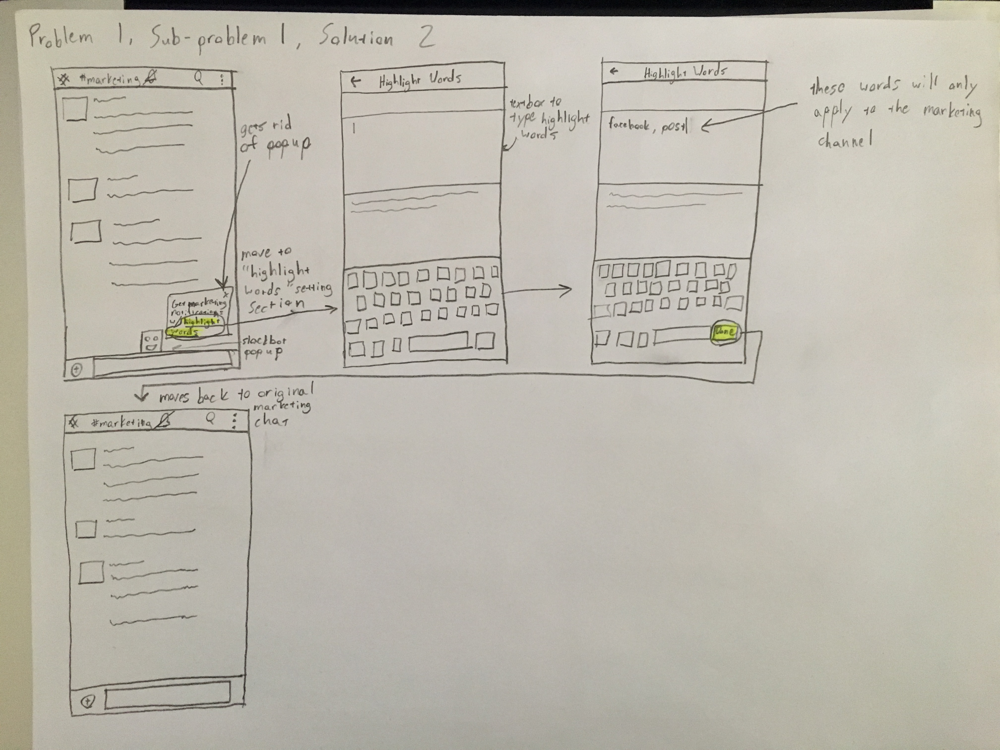 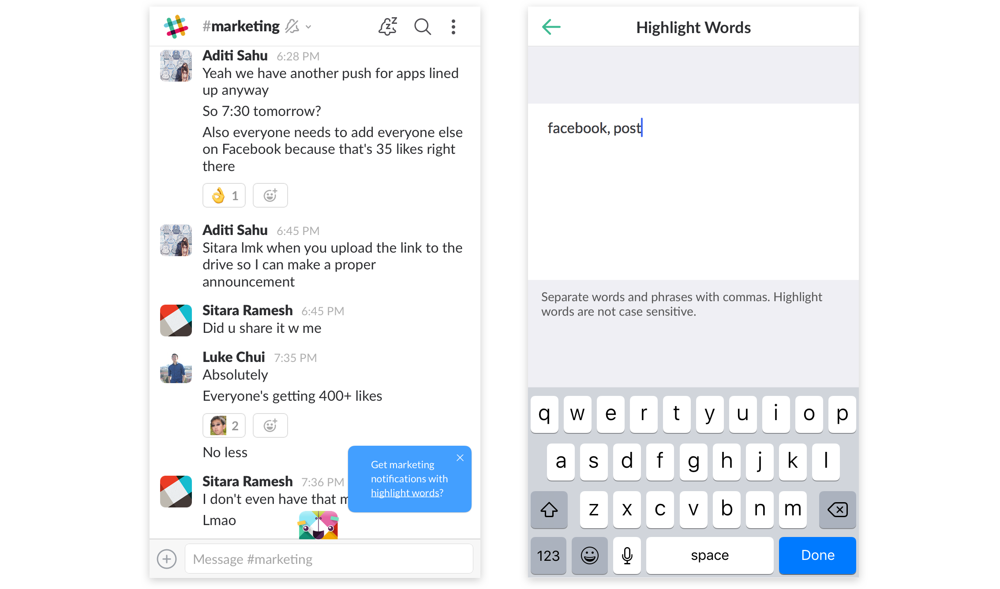Problem: 42.9% of the people I interviewed didn’t know it was possible to mute a channel. Of those who did know about it, 58.3% of them have at least one channel on mute. Clearly it’s a useful feature.
Solution #1: Slack should utilize push notifications to let users either mute a channel indefinitely or mute the entire app for one hour. The reasoning for only being able to mute the app for one hour is that we don’t want a user to forget that the app is on mute and then miss important information. However, being able to indefinitely mute a channel while the app is unmuted means that even if the user forgets about that action, he/she can still be contacted through the app.
In addition, I added a "Reply" capability allowing the user to reply to a message without opening the app. I also added a "View" capability allowing the user to open the app through the notification.
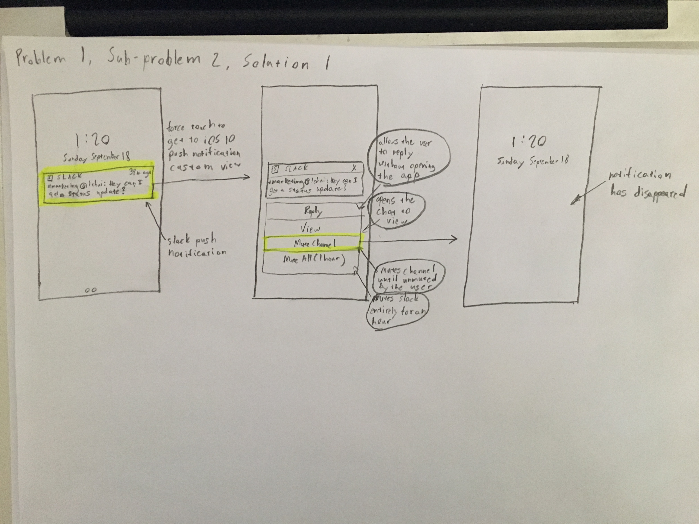 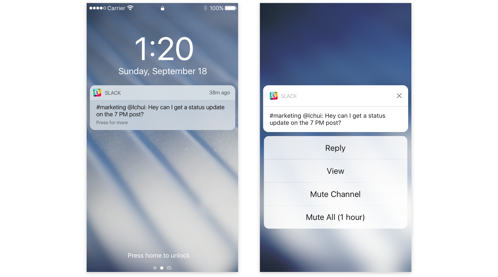Solution #2: If the user hasn’t checked a channel for a while, Slackbot pops up and gives the user the option to mute that specific channel.
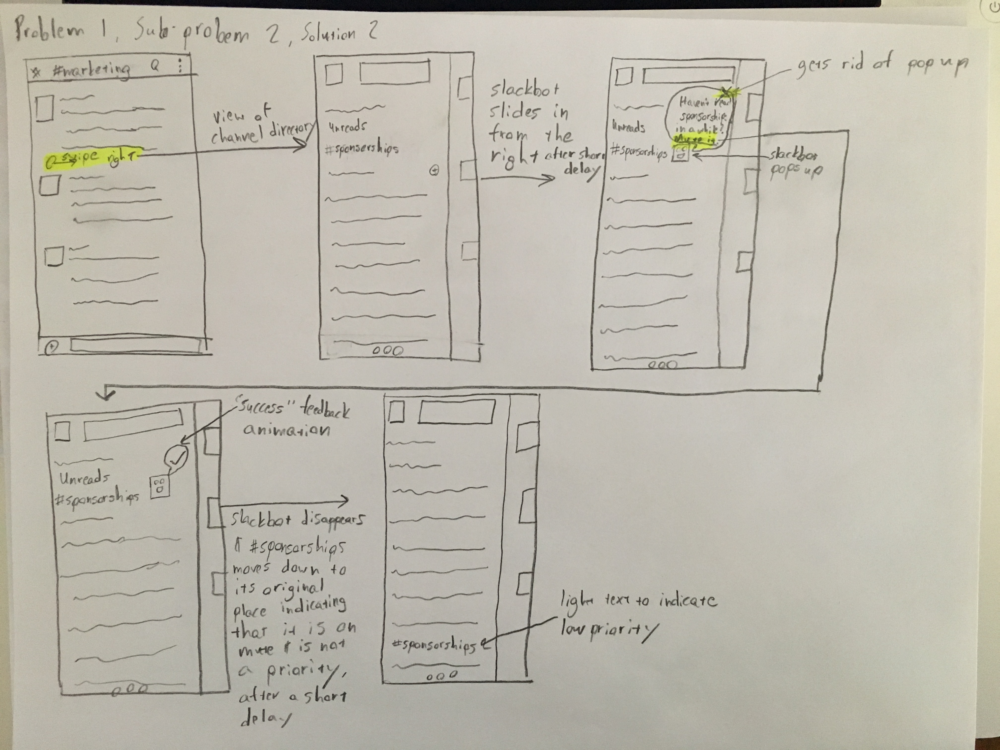 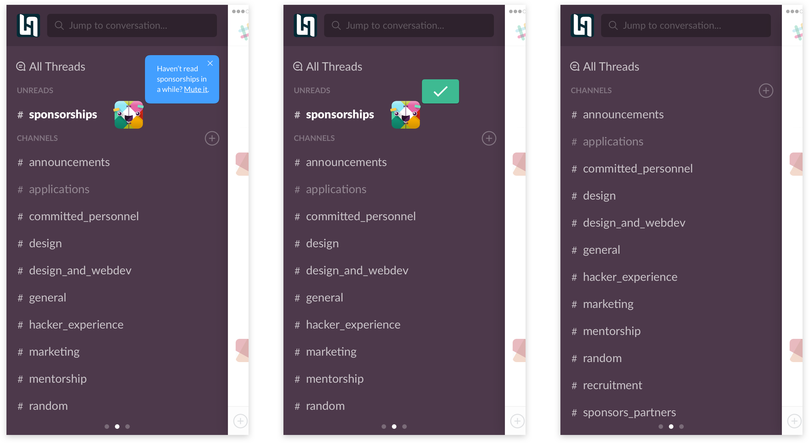Problem: Many of the individuals who claimed their biggest problem to be notification management said that one reason for this is that there are too many one-on-one conversations. Funnily enough, while conducting these interviews, Slack actually released its new threading feature. Yet as of writing this, it has been one week and not a single person on the LA Hacks team has utilized a thread.
Solution: If a select few people are having a one-on-one extended conversation, Slackbot offers a suggestion to start a thread. A conversation can be determined to be one-on-one and extended by an algorithm that takes into account a variety of factors such as:
The layout of the mobile application is incredibly well-designed. However throughout my interviews, I noticed two concerns that prompted me to conduct usability tests. For these usability tests, I worked with 10 individuals who are familiar with Slack but not its mobile application. Thus, they understood the key features of the app and its purpose but didn't know much about the layout of the mobile application.
Problem: In my interviews, 3 people specifically brought up their frustration with finding pinned posts. Interested in this, I asked the individuals in my usability tests to find pinned posts in a specific channel. 50% of them initially scrolled up in the chat. Another 20% clicked the three dot icon on the top right of the navigation bar. This indicates that most users assumed it to be somewhere at the top of their screen but it’s not very clear how everything is organized.
Solution: Alter the top navigation bar. Get rid of the search button and place it in a separate modal since it doesn't have to do with navigating the app and is a different form of navigation when compared to the other 3. Move the title of the channel to the middle to convey the idea that all options for the channel can be found there. The slack logo on the top left is for moving to the left to the channel/message directories and the 3 vertical dots is for navigating to the right to see personal settings and options. Implement a modal that doesn’t navigate the user away from the chat screen to make the process feel quicker. Only place the most used features in there and place a button that will allow the user to get to more options that are essentially used less.
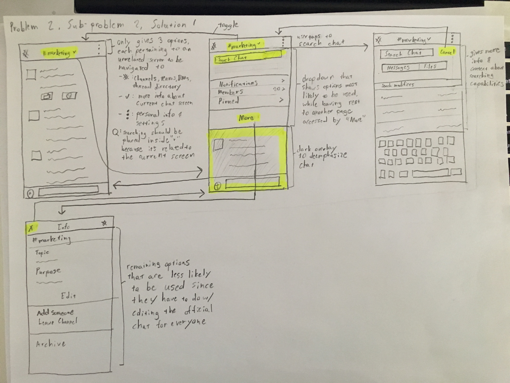 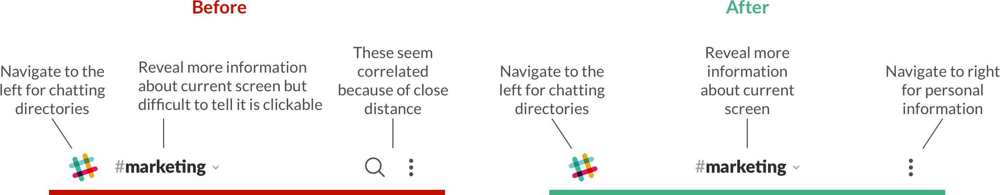 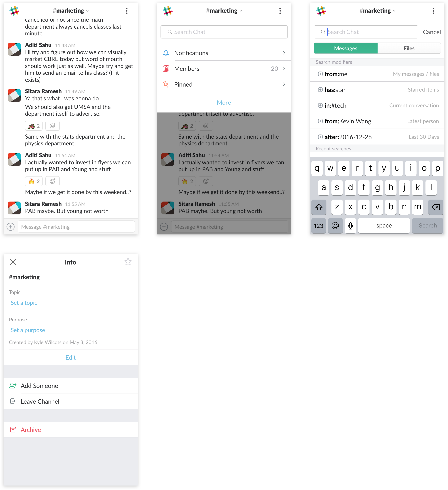Problem: When interviewing one individual, we discovered that on mobile the "+" icon next to "Channels" in the channel directory is for showing all existing channels. However on desktop, that same button is for creating a new channel, while clicking “Channels” shows all existing channels. The interviewee said that this was incredibly confusing.
Because a user is more likely to search for existing channels on his/her mobile app, I asked each user in my test to do just that. Interestingly, every single one of them clicked “All Threads”. 80% of them also told me that they thought the "+" icon was for “creating a new channel” since the "+" is usually utilized to convey "new" or "add" in most apps.
Solution: Leave the desktop alone since it utilizes the icon correctly. On mobile, get rid of the "+" and change to “View All”. Change “All Threads” to “Active Threads”, since the use of “All” can be connected to the idea of “All Channels”.
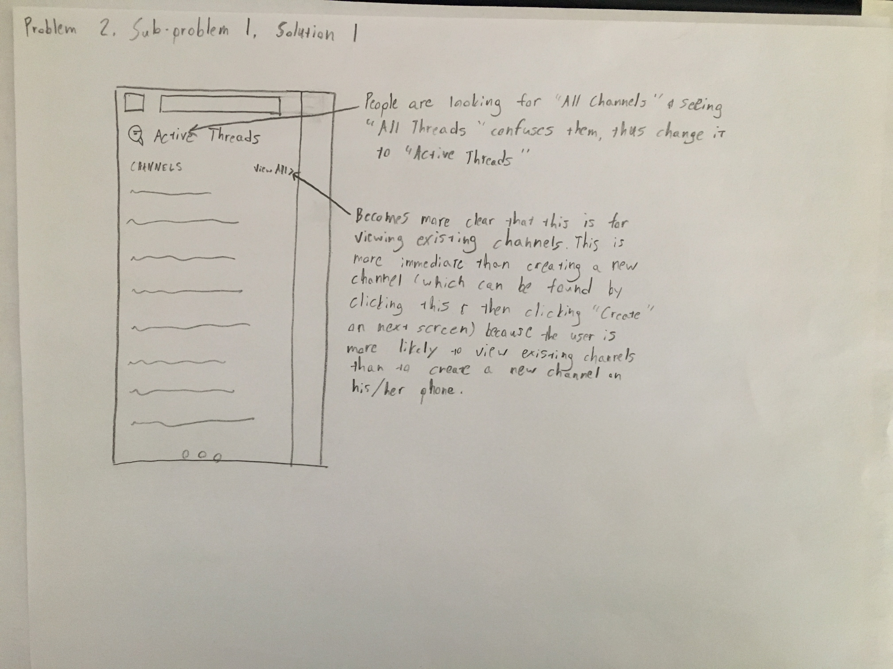 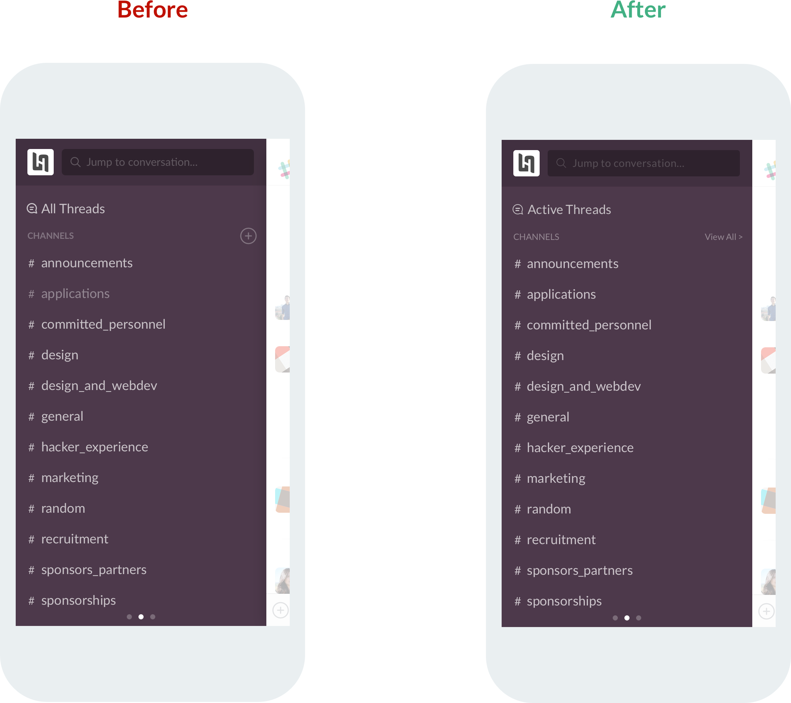